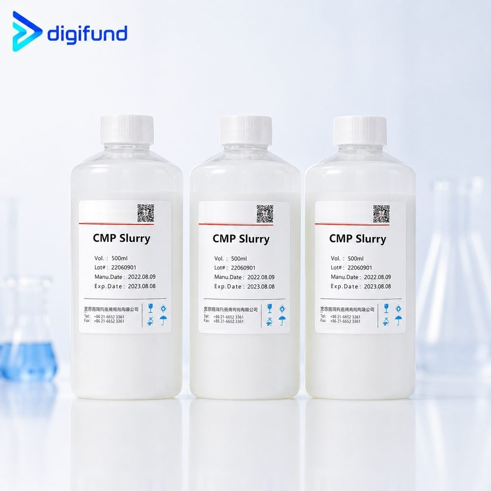
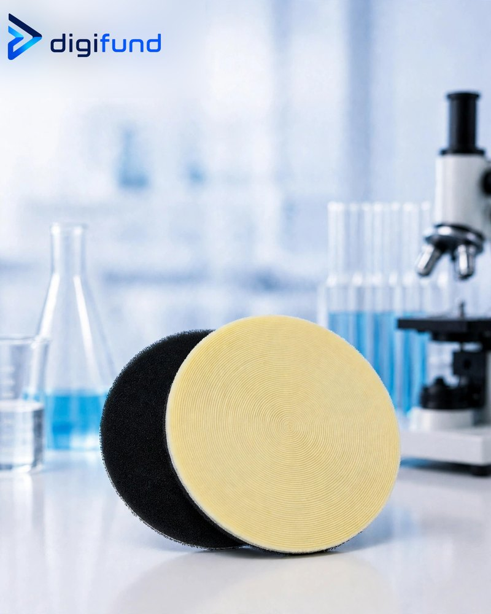

Nội dung chính
Contents
- CMP là gì và vì sao cần?
- Cơ chế: hoá học cộng cơ học
- Các bước CMP chính trong chế tạo chip
- Slurry CMP: thành phần và cách chọn
- Pad CMP: cứng, mềm và pad chồng
- Conditioner, lọc và phụ kiện
- Thông số quy trình và chỉ tiêu đánh giá
- Làm sạch sau CMP
- Vật tư CMP Digifund cung cấp
- Thông số cần gửi khi hỏi báo giá
- What is CMP and why is it needed?
- Mechanism: chemistry plus mechanics
- Main CMP steps in chip fabrication
- CMP slurry: composition and selection
- CMP pads: hard, soft and stacked
- Conditioners, filters and accessories
- Process parameters and metrics
- Post-CMP cleaning
- CMP consumables Digifund supplies
- Specifications to send for a quote
1. CMP là gì và vì sao cần?
1. What is CMP and why is it needed?
CMP (chemical mechanical planarization, hay chemical mechanical polishing) là quá trình ép wafer úp xuống một tấm pad đang quay, trong khi một dung dịch chứa hạt mài và hoá chất gọi là slurry được nhỏ liên tục lên pad. Hoá chất làm mềm hoặc oxy hoá lớp bề mặt, hạt mài và pad gạt lớp đó đi. Kết quả là bề mặt wafer được làm phẳng trên toàn bộ diện tích, không chỉ được đánh bóng cục bộ.
CMP (chemical mechanical planarization, or chemical mechanical polishing) presses a wafer face-down onto a rotating pad while a liquid of abrasive particles and chemicals, the slurry, is fed continuously onto the pad. The chemistry softens or oxidises the surface layer, and the abrasive and pad sweep it away. The result is a surface that is planarised across the whole wafer, not just locally polished.
Mỗi lần lắng đọng và khắc một lớp, bề mặt wafer lại gồ ghề thêm. Nếu không làm phẳng, các lớp phía trên sẽ vượt quá độ sâu tiêu cự của máy quang khắc và kim loại sẽ bị đứt ở các bậc. CMP vì thế là bước bắt buộc trong chip nhiều lớp kim loại, và cũng là cách tạo dây đồng bằng quy trình damascene. Tìm hiểu thêm về giới hạn tiêu cự trong bài quy trình quang khắc.
Every deposition and etch step adds topography. Without planarisation, upper layers would fall outside the depth of focus of the lithography tool and metal lines would break over steps. CMP is therefore mandatory for multi-level metal chips, and it is also how copper wiring is formed in the damascene process. Depth-of-focus limits are covered in the photolithography process article.
2. Cơ chế: hoá học cộng cơ học
2. Mechanism: chemistry plus mechanics
Tốc độ bóc vật liệu (MRR, material removal rate) thường được mô tả gần đúng bằng phương trình Preston: MRR ≈ Kp · P · V, trong đó P là áp lực ép wafer, V là vận tốc tương đối giữa wafer và pad, còn Kp là hệ số gộp ảnh hưởng của slurry, pad và vật liệu. Tăng áp lực hoặc tốc độ quay thì bóc nhanh hơn, nhưng cũng dễ tăng xước và giảm độ đồng đều.
The material removal rate (MRR) is commonly approximated by the Preston equation: MRR ≈ Kp · P · V, where P is the down-force pressure, V the relative velocity between wafer and pad, and Kp a coefficient lumping together slurry, pad and material effects. Higher pressure or speed removes material faster but also tends to increase scratches and hurt uniformity.
Vì sao CMP làm phẳng được? Các điểm nhô cao chịu áp lực cục bộ lớn hơn nên bị bóc nhanh hơn các vùng thấp. Phần hoá học quyết định vật liệu nào bị bóc nhanh, vật liệu nào là lớp dừng, tức độ chọn lọc của slurry.
Why does CMP planarise? High points see higher local pressure, so they are removed faster than low areas. The chemistry decides which material is removed quickly and which acts as a stop layer, the slurry's selectivity.
3. Các bước CMP chính trong chế tạo chip
3. Main CMP steps in chip fabrication
Mỗi ứng dụng cần một cặp slurry – pad riêng. Bảng dưới tóm tắt các hệ thường gặp; thành phần cụ thể khác nhau theo nhà sản xuất và quy trình.
Each application needs its own slurry – pad pairing. The table summarises common systems; exact formulations vary by supplier and process.
| Bước CMPCMP step | Hạt mài thường dùngTypical abrasive | Môi trườngChemistry | Mục tiêu / lớp dừngGoal / stop layer |
|---|---|---|---|
| ILD oxide (điện môi giữa các lớp)ILD oxide (interlayer dielectric) | Silica (fumed / keo)Silica (fumed / colloidal) | Kiềm, pH ≈ 10–11Alkaline, pH ≈ 10–11 | Phẳng hoá oxide, bóc theo thời gianPlanarise oxide, timed removal |
| STI (shallow trench isolation) | Ceria (CeO₂) hoặc silicaCeria (CeO₂) or silica | Có phụ gia tăng chọn lọcWith selectivity additives | Bóc oxide, dừng trên nitride (Si₃N₄)Remove oxide, stop on nitride (Si₃N₄) |
| Tungsten (W plug)Tungsten (W plug) | Silica hoặc aluminaSilica or alumina | Axit, có chất oxy hoá (thường H₂O₂)Acidic, with oxidiser (often H₂O₂) | Bóc W thừa, dừng trên oxide / barrierRemove excess W, stop on oxide / barrier |
| Đồng (Cu damascene)Copper (Cu damascene) | Silica keo, nồng độ thấpColloidal silica, low loading | Chất oxy hoá, chất tạo phức, chất ức chế ăn mòn (vd BTA)Oxidiser, complexing agent, corrosion inhibitor (e.g. BTA) | Bước 1 bóc Cu dừng trên barrier; bước 2 bóc barrier (Ta/TaN)Step 1 removes Cu, stops on barrier; step 2 removes barrier (Ta/TaN) |
| PolysiliconPolysilicon | SilicaSilica | KiềmAlkaline | Phẳng hoá poly, dừng trên oxidePlanarise poly, stop on oxide |
| Đánh bóng wafer silicSilicon wafer polishing | Silica keoColloidal silica | KiềmAlkaline | Bóc thô rồi đánh bóng hoàn thiện cho bề mặt gươngStock removal, then final polish to a mirror surface |
Với Cu, phải bảo vệ dây đồng khỏi bị ăn mòn và lõm trong lúc đánh bóng, nên slurry đồng luôn phức tạp hơn slurry oxide. Đánh bóng wafer silic là bước cuối trong sản xuất wafer, ảnh hưởng trực tiếp tới độ nhám và độ phẳng mà bạn đọc thấy trên datasheet, xem thêm bài silicon wafer là gì.
Copper must be protected from corrosion and dishing during polishing, so copper slurries are always more complex than oxide slurries. Silicon wafer polishing is the last step of wafer manufacturing and sets the roughness and flatness you see on a datasheet; see what is a silicon wafer.
4. Slurry CMP: thành phần và cách chọn
4. CMP slurry: composition and selection

Một slurry CMP gồm các thành phần chính sau:
A CMP slurry has these main components:
- Hạt mài — silica keo (colloidal), silica fumed, ceria hoặc alumina, cỡ hạt thường vài chục đến vài trăm nanomet. Hạt càng đều, càng ít hạt to thì càng ít xước.
- Hàm lượng rắn — tính theo % khối lượng; slurry oxide thường đặc hơn slurry đồng.
- pH và chất đệm — quyết định tốc độ phản ứng và độ ổn định của hạt.
- Chất oxy hoá — cho slurry kim loại (W, Cu), thường là H₂O₂, thêm vào ngay trước khi dùng.
- Chất tạo phức, chất ức chế ăn mòn, chất hoạt động bề mặt — điều chỉnh độ chọn lọc, chống lõm và giảm khuyết tật.
- Abrasive — colloidal silica, fumed silica, ceria or alumina, typically tens to a few hundred nanometres. More uniform particles with fewer oversized ones mean fewer scratches.
- Solids loading — in wt%; oxide slurries are usually more concentrated than copper slurries.
- pH and buffer — control reaction rate and particle stability.
- Oxidiser — for metal slurries (W, Cu), usually H₂O₂, added just before use.
- Complexing agents, corrosion inhibitors, surfactants — tune selectivity, limit dishing and reduce defects.
Khi chọn slurry, bắt đầu từ vật liệu cần bóc và vật liệu cần dừng, rồi tới tốc độ bóc mong muốn và mức khuyết tật chấp nhận được. Một số lưu ý khi bảo quản và sử dụng:
To choose a slurry, start from the material to remove and the material to stop on, then the target removal rate and the acceptable defect level. A few handling notes:
- Không để slurry đông đá hoặc quá nóng; hạt có thể kết tụ không hồi phục.
- Lắc hoặc khuấy đều trước khi dùng vì hạt lắng theo thời gian.
- Slurry đã trộn chất oxy hoá có thời gian sử dụng giới hạn (pot life); chỉ trộn lượng đủ dùng.
- Dùng lõi lọc trên đường cấp để loại hạt kết tụ gây xước.
- Theo dõi hạn dùng và điều kiện bảo quản ghi trên nhãn của từng lô.
- Do not let slurry freeze or overheat; particles can agglomerate irreversibly.
- Shake or stir before use, as particles settle over time.
- Slurry mixed with oxidiser has a limited pot life; mix only what you need.
- Use point-of-use filters to catch agglomerates that cause scratches.
- Follow the shelf life and storage conditions on each lot's label.
5. Pad CMP: cứng, mềm và pad chồng
5. CMP pads: hard, soft and stacked

Pad giữ và phân phối slurry, đồng thời truyền áp lực xuống wafer. Độ cứng của pad quyết định cách nó "nhìn" địa hình bề mặt:
The pad holds and distributes slurry and transmits pressure to the wafer. Its stiffness decides how it "sees" surface topography:
| Pad cứngHard pad | Pad mềmSoft pad | |
|---|---|---|
| Vật liệuMaterial | Polyurethane đúc, có vi lỗCast microporous polyurethane | Poromeric (nỉ / sợi tẩm polyurethane)Poromeric (polyurethane-impregnated felt) |
| Ưu điểmStrength | Phẳng hoá tốt, ít "ôm" theo bề mặtGood planarisation, conforms little | Ít xước, bề mặt nhẵnLow scratching, smooth finish |
| Dùng choUsed for | Bước bóc chính: oxide, W, CuMain removal steps: oxide, W, Cu | Đánh bóng hoàn thiện, buff, đánh bóng wafer silic lần cuốiFinal polish, buffing, final silicon wafer polish |
Pad chồng (pad cứng dán trên một lớp sub-pad mềm) là cách dung hoà: lớp trên cứng giữ độ phẳng cục bộ, lớp dưới mềm giúp pad ôm theo độ cong của cả wafer để đồng đều hơn. Rãnh trên mặt pad (XY, K-groove đồng tâm…) giúp phân phối slurry mới và đẩy slurry cũ cùng mảnh vụn ra ngoài. Kích thước pad phải khớp với bàn quay (platen) của máy CMP.
A stacked pad (a hard pad laminated on a soft sub-pad) is the compromise: the hard top keeps local planarity while the soft base lets the pad follow whole-wafer curvature for better uniformity. Grooves on the pad surface (XY, concentric K-groove…) distribute fresh slurry and carry spent slurry and debris away. Pad size must match the CMP tool's platen.
6. Conditioner, lọc và phụ kiện
6. Conditioners, filters and accessories
- Pad conditioner — đĩa gắn hạt kim cương (mạ hoặc CVD) cào nhẹ mặt pad để mở lại vi lỗ bị bít bởi slurry và mảnh vụn (hiện tượng "glazing"). Không có conditioning, tốc độ bóc giảm dần theo từng wafer.
- Lõi lọc slurry — lọc sâu cỡ khoảng 0,5–10 µm, chặn hạt kết tụ trước khi chúng tới pad.
- Retaining ring — vòng giữ wafer trong đầu đánh bóng, cũng ảnh hưởng tới độ đồng đều ở mép wafer; là vật tư hao mòn.
- Chổi PVA — dùng trong bước làm sạch sau CMP.
- Pad conditioner — a diamond disc (plated or CVD) that lightly abrades the pad to reopen pores clogged by slurry and debris ("glazing"). Without conditioning, removal rate decays wafer after wafer.
- Slurry filters — depth filters of roughly 0.5–10 µm that stop agglomerates before they reach the pad.
- Retaining ring — holds the wafer in the polishing head and also affects edge uniformity; a wear part.
- PVA brushes — used in post-CMP cleaning.
7. Thông số quy trình và chỉ tiêu đánh giá
7. Process parameters and metrics
Các khoảng dưới đây là giá trị tham khảo thường gặp cho máy CMP wafer 200 / 300 mm; điểm làm việc thực tế phải tối ưu theo máy, slurry và pad cụ thể.
The ranges below are common reference values for 200 / 300 mm wafer CMP tools; the actual operating point must be tuned for the specific tool, slurry and pad.
| Thông sốParameter | Khoảng tham khảoReference range | Ảnh hưởngEffect |
|---|---|---|
| Áp lực épDown-force | ~1–6 psi (~7–40 kPa) | Tăng MRR; quá cao gây xước, lõmRaises MRR; too high causes scratches, dishing |
| Tốc độ bàn / đầuPlaten / head speed | ~30–120 rpm | Tăng MRR, ảnh hưởng đồng đềuRaises MRR, affects uniformity |
| Lưu lượng slurrySlurry flow | ~100–300 mL/min | Quá ít gây khô, nóng; quá nhiều tốn kémToo little runs dry and hot; too much wastes slurry |
| Nhiệt độ padPad temperature | Theo dõi, thường vài chục °CMonitored, typically a few tens of °C | Thay đổi tốc độ phản ứng hoá họcChanges chemical reaction rate |
Các chỉ tiêu đánh giá kết quả CMP:
Metrics used to judge a CMP result:
- MRR — tốc độ bóc, nm/phút hoặc Å/phút.
- WIWNU — độ không đồng đều trong wafer, %.
- Dishing (lõm giữa các đường kim loại rộng) và erosion (mòn vùng điện môi ở mật độ dây cao).
- Độ chọn lọc — tỉ lệ tốc độ bóc giữa vật liệu cần bóc và lớp dừng.
- Khuyết tật — vết xước, hạt bám, ăn mòn, cặn hữu cơ.
- MRR — removal rate in nm/min or Å/min.
- WIWNU — within-wafer non-uniformity, %.
- Dishing (recess in wide metal lines) and erosion (dielectric loss in dense line arrays).
- Selectivity — removal-rate ratio between the target material and the stop layer.
- Defects — scratches, particles, corrosion, organic residue.
8. Làm sạch sau CMP
8. Post-CMP cleaning
Sau CMP, bề mặt wafer còn hạt mài, ion kim loại và cặn chất ức chế. Phải làm sạch ngay, trước khi slurry khô bám chặt. Quy trình điển hình gồm chà bằng chổi PVA với dung dịch làm sạch (dung dịch kiềm loãng cho oxide, dung dịch có tính axit nhẹ hoặc chất tạo phức cho Cu), rửa nước DI, có thể kèm siêu âm megasonic, rồi sấy quay. Nguyên tắc chung về hoá chất làm sạch và cách thao tác wafer có trong bài làm sạch wafer theo quy trình RCA.
After CMP, the wafer carries abrasive particles, metal ions and inhibitor residue. It must be cleaned immediately, before slurry dries on. A typical sequence is PVA brush scrubbing with a cleaning chemistry (dilute alkaline for oxide, mildly acidic or complexing chemistry for Cu), DI water rinse, optional megasonic, then spin dry. General cleaning chemistry and wafer handling are covered in silicon wafer cleaning (RCA).
9. Vật tư CMP Digifund cung cấp
9. CMP consumables Digifund supplies
Digifund cung cấp vật tư CMP cho fab và phòng thí nghiệm tại Việt Nam:
Digifund supplies CMP consumables for fabs and labs in Vietnam:
| NhómGroup | Lựa chọnOptions |
|---|---|
| CMP slurries | Slurry silica cho oxide, đồng (Cu) và tungsten (W)Silica slurries for oxide, copper (Cu) and tungsten (W) |
| CMP pads | Pad polyurethane cứng / pad poromeric mềm; đơn lớp hoặc chồng sub-pad; rãnh XY, K-groove, đồng tâm; cỡ theo máy CMP 200 / 300 mm; dùng cho oxide, Cu, W, SiHard polyurethane / soft poromeric pads; single layer or stacked with sub-pad; XY, K-groove or concentric grooves; sized for 200 / 300 mm CMP tools; for oxide, Cu, W, Si |
| Phụ kiện CMPCMP accessories | Đĩa conditioner kim cương (mạ / CVD), lõi lọc slurry 0,5–10 µm, retaining ring, chổi PVA làm sạch sau CMPDiamond conditioner discs (plated / CVD), 0.5–10 µm slurry filters, retaining rings, post-CMP PVA brushes |
10. Thông số cần gửi khi hỏi báo giá
10. Specifications to send for a quote
- Vật liệu cần đánh bóng và lớp dừng (ví dụ oxide trên nitride, W trên oxide, Cu trên Ta/TaN, wafer Si trần).
- Máy CMP hoặc máy đánh bóng đang dùng, đường kính platen và cỡ wafer / mẫu.
- Tốc độ bóc mong muốn, yêu cầu về độ nhám, độ phẳng, khuyết tật.
- Loại pad (cứng / mềm / chồng), kiểu rãnh, có cần lớp keo dán mặt sau không.
- Slurry hiện dùng (nếu đang tìm sản phẩm tương đương) và số lượng mỗi tháng.
- Phụ kiện cần kèm: conditioner, lõi lọc, retaining ring, chổi PVA.
- Material to polish and the stop layer (for example oxide on nitride, W on oxide, Cu on Ta/TaN, bare Si wafer).
- CMP tool or polisher in use, platen diameter and wafer / sample size.
- Target removal rate and roughness, flatness and defect requirements.
- Pad type (hard / soft / stacked), groove pattern, and whether a pressure-sensitive adhesive backing is needed.
- Current slurry (if you need an equivalent) and monthly quantity.
- Accessories needed: conditioners, filters, retaining rings, PVA brushes.
Câu hỏi thường gặp
Frequently asked questions
CMP khác đánh bóng cơ học thông thường thế nào?How is CMP different from ordinary mechanical polishing?
Đánh bóng cơ học chỉ dùng hạt mài nên dễ để lại vết xước và lớp hư hỏng dưới bề mặt. CMP kết hợp phản ứng hoá học làm mềm hoặc oxy hoá bề mặt với hạt mài rất mịn, nên vừa phẳng hoá được cả wafer vừa cho bề mặt nhẵn ở mức nanomet, ít khuyết tật.
Mechanical polishing relies on abrasives alone and tends to leave scratches and subsurface damage. CMP combines chemistry that softens or oxidises the surface with very fine abrasives, so it planarises the whole wafer and leaves a nanometre-smooth, low-defect surface.
Nên chọn slurry silica hay ceria cho đánh bóng oxide?Should I use silica or ceria slurry for oxide CMP?
Slurry silica pH kiềm là lựa chọn phổ biến và dễ dùng cho ILD oxide. Slurry ceria cho tốc độ bóc oxide cao ở nồng độ hạt thấp và có thể đạt độ chọn lọc cao giữa oxide và nitride, nên thường dùng cho STI. Lựa chọn cuối cùng phụ thuộc vật liệu dừng và yêu cầu khuyết tật của quy trình.
Alkaline silica slurry is the common, easy-to-use choice for ILD oxide. Ceria slurry gives high oxide removal at low particle loading and can reach high oxide-to-nitride selectivity, so it is often used for STI. The final choice depends on the stop layer and the process's defect requirements.
Khi nào nên dùng pad cứng, khi nào dùng pad mềm?When should I use a hard pad and when a soft pad?
Pad polyurethane cứng ít biến dạng nên phẳng hoá tốt, dùng cho bước bóc vật liệu và phẳng hoá chính. Pad mềm dạng poromeric ôm bề mặt hơn nên ít xước, dùng cho bước đánh bóng hoàn thiện, buff hoặc đánh bóng wafer silic lần cuối. Pad chồng cứng trên sub-pad mềm cân bằng giữa độ phẳng cục bộ và độ đồng đều toàn wafer.
Hard polyurethane pads deform little and planarise well, so they are used for main removal and planarisation. Soft poromeric pads conform more and scratch less, so they are used for final polish, buffing or final silicon wafer polishing. A hard pad stacked on a soft sub-pad balances local planarity and whole-wafer uniformity.
Digifund cung cấp những vật tư CMP nào?Which CMP consumables does Digifund supply?
Digifund cung cấp slurry CMP cho oxide, đồng và tungsten, pad polyurethane cứng và pad poromeric mềm (đơn lớp hoặc chồng sub-pad, rãnh XY, K-groove hoặc đồng tâm, cỡ theo máy 200 / 300 mm), cùng phụ kiện như đĩa conditioner kim cương, lõi lọc slurry 0,5–10 µm, retaining ring và chổi PVA làm sạch sau CMP.
Digifund supplies CMP slurries for oxide, copper and tungsten, hard polyurethane and soft poromeric pads (single layer or stacked with sub-pad, XY, K-groove or concentric grooves, sized for 200 / 300 mm tools), and accessories such as diamond conditioner discs, 0.5–10 µm slurry filters, retaining rings and post-CMP PVA brushes.
Cần slurry hoặc pad CMP cho quy trình của bạn?
Need CMP slurry or pads for your process?
Gửi vật liệu cần đánh bóng, lớp dừng, máy CMP và cỡ wafer, đội ngũ kỹ thuật Digifund sẽ tư vấn cặp slurry – pad phù hợp và gửi báo giá.
Send the material to polish, the stop layer, your CMP tool and wafer size, and Digifund's technical team will recommend a matching slurry – pad pair and send a quote.
Nhận tư vấn kỹ thuậtGet technical advice Xem vật liệu chế tạoView fabrication materials